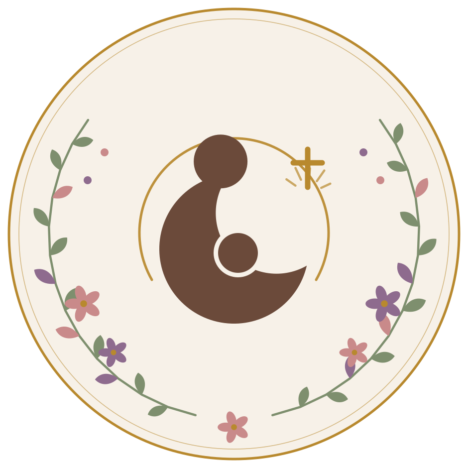

Em preparoAlgo está crescendo nesta casa.
Como todo pão de verdade, o que se prepara aqui não tem pressa — tem fermento, tem descanso e tem hora certa de ir ao forno.
Uma caminhada
Não um curso para assistir — uma travessia para fazer, com prática e companhia.
Em grupo pequeno
Do tamanho de uma mesa de cozinha: onde todo mundo tem nome e ninguém fica para trás.
No tempo certo
Massa que cresce apressada, solta. Quando a mesa estiver posta, quem caminha junto saberá primeiro.
Tudo tem o seu tempo determinado, e há tempo para todo propósito debaixo do céu.
Enquanto o pão cresce…
O melhor lugar para caminhar junto é o conteúdo: o guia gratuito da manhã e os textos no Instagram. É por lá que a novidade chega primeiro.